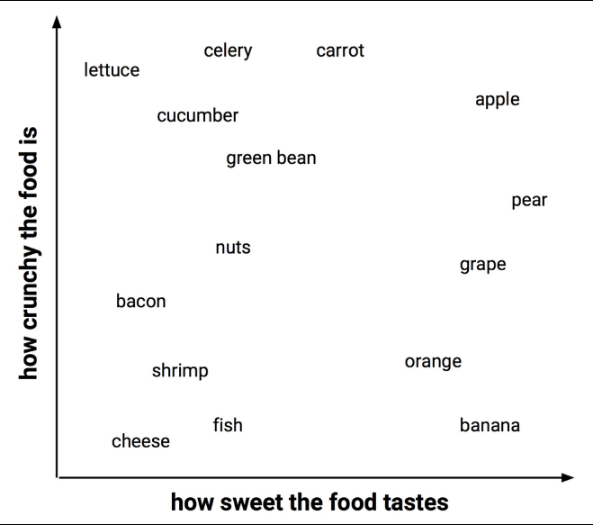
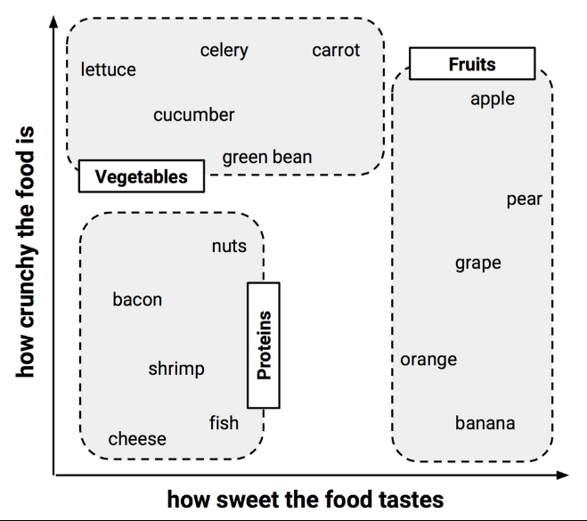
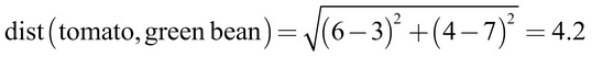
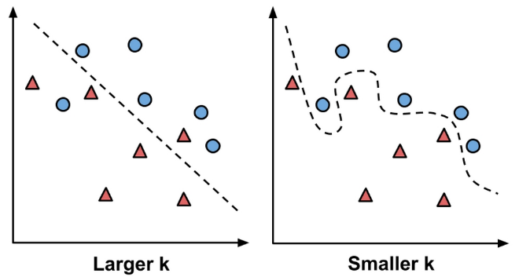
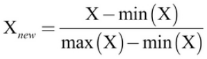
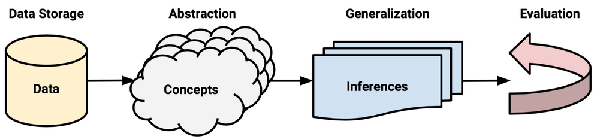
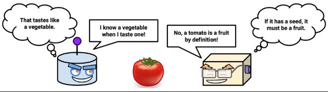

k-NEAREST-NEIGBORS
Supervised lazy learner classifiers
Marcus Birkenkrahe
Created: 2023-02-21 Tue 12:18
k-nearest neighbors

- Lecture notes in Markdown file (
4_knn.md) - Source: Lantz (2019), chapter 3, pp. 65-89
- See also: DataCamp assignment chapter 1
What you will learn
- Concepts for "lazy learners" classifiers
- How to easure similarity using distance
- Demo: cancer classification using R
- Exercises in GitHub as Org-mode file
- Solutions in GitHub as PDF files
Nearest neighbor classification

- Classify unlabeled (unknown) examples
- Assign similar labeled (known) examples
- Human examples: reading, eating, meeting
- Simple but powerful methods
Nearest-neighbor applications

- Computer vision and facial recognition
- Recommender systems
- Genetic data pattern matching
Applicability

- Features related in complex ways
- Similar items homogeneous
- "You know it when you see it"
The k-NN algorithm

- Pick number of nearest neighbors k
- Use labeled training data set
- Identify k nearest records in test data
- Assign class to unlabeled test instance
Workflow

Example: blind tasting

Training: feature space

Training: feature patterns

Testing: label examples

Euclidean distance

- \(p\), \(q\): examples to be compared
- e.g. p=tomato, q=grape
- \(1...n\): example features
- e.g. \(1\) = sweetness, \(2\) = crunchiness

Calculate distances

- 1-NN: "The tomato is a fruit"
- 2-NN: "The tomato is a fruit or a protein"
- 3-NN: "The tomato is a fruit"
Underfitting vs. overfitting

Underfitting | Perfect fit | Overfitting
Choice of k

- \(k\) determines performance on future data
- Danger of underfitting or overfitting
- "Bias-variance" tradeoff
Data preparation

min-max normalization

z-score standardization
Dummy coding

2-category (binary) variable (male, female)

3-category variable (hot, medium, cold)
Why is k-NN "lazy learning"?

- k-NN has no generalization/abstraction
- Data are stored verbatim (rapid training)
- Test/production relies on training data (slow)
Rote learning

- Instance-based learners build no models
- Non-parametric methods learn no parameters
- Rote learners find natural bias-free patterns
Strengths and Weaknesses
| STRENGTHS | WEAKNESSES |
| Simple and effective | No model |
| No assumptions | Selection of k |
| Fast training | Slow classification |
| Natural, no bias | Additional processing |
Summary
- k-nearest neighbors does no learning at all
- k-NN stores training data, matches test data to most similar records in training set using a distance function
- Unlabeled example is assigned neighbor's label
- Though simple, k-NN performs well for extremely complex tasks
Glossary of concepts
Glossary of code
References
4_knn.jpg: Photo by Beth Macdonald on Unsplash.4_darkrestaurant.png: Patrons at the Whale Inside Dark Restaurant.4_nn_applications.jpg: Photo by George Prentzas on Unsplash.4_knn_cat_dog.png,4_knn_algorithm.png- Christopher (Feb 2, 2021).- Lantz (2019). Machine Learning with R (3e). Packt.
- Christopher (2021). K-Nearest Neighbor. URL: medium.com.